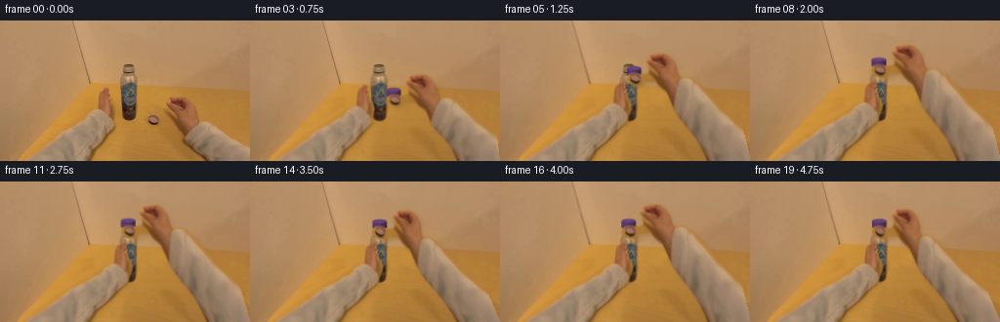
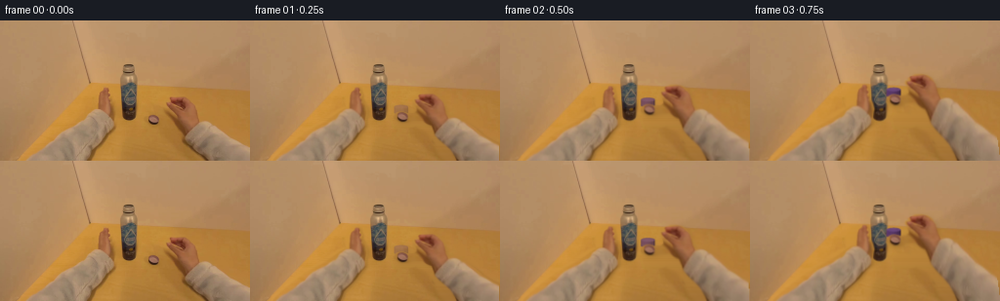
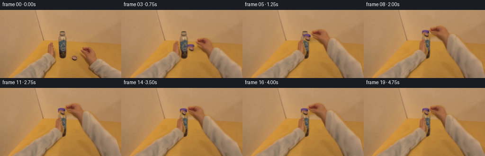
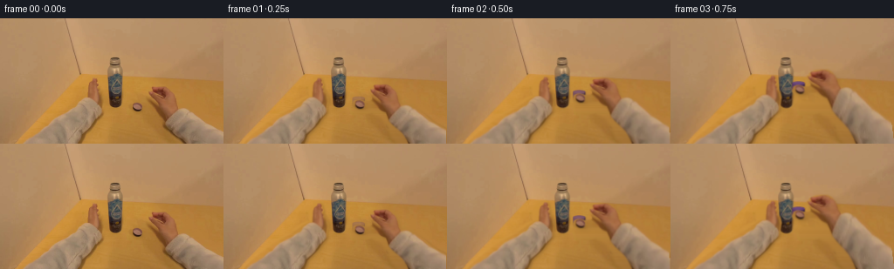

CODING AGENTS AS PIXEL WORLD MODELS
traex/GPT-6.1-Sol · common50_0014
点击播放 · 原生 RGB 像素
逐轮保存的候选
回放视频、检查图与代码变化。
每份候选均可单独播放。实际图片检查记录在下方工具轨迹中。
候选 01播放与检查图
点击播放 · 原生 RGB 像素


展开代码变化
--- 上一保存版本
+++ 本次保存版本
@@ -0,0 +1,174 @@
+from pathlib import Path
+import numpy as np
+from PIL import Image, ImageDraw, ImageFilter
+import artifact_io
+
+ROOT=Path(__file__).resolve().parent
+W,H=256,144
+Y,X=np.mgrid[:H,:W].astype(np.float32)
+SRC=np.asarray(Image.open(ROOT/'first_frame.png').convert('RGB'), dtype=np.uint8)
+F=SRC.astype(np.float32)
+
+def mask_poly(points, blur=.48):
+ im=Image.new('L',(W*4,H*4)); ImageDraw.Draw(im).polygon([(round(x*4),round(y*4)) for x,y in points],fill=255)
+ im=im.resize((W,H),Image.Resampling.LANCZOS)
+ if blur: im=im.filter(ImageFilter.GaussianBlur(blur))
+ return np.asarray(im,dtype=np.float32)/255
+
+right_pts=[(179,77.5),(186,77.5),(192,79),(196,82),(198,85),(200,89),(201,94),(202,99),
+ (204,102),(213,103),(223,108),(231,113),(239,120),(248,125),(259,131),(265,150),
+ (214,150),(210,140),(205,133),(199,128),(194,124),(190,120),(189,116),(187,111),
+ (182,109),(177,106),(169,106),(162,108),(155,108),(150,106),(148,104),(148.5,101),
+ (150,98),(154,96.5),(158,96.5),(163,98),(168,98),(172,96),(172,93),(171,91),
+ (171,89),(169,87),(168.5,85),(169.5,83),(172.5,83),(172,81),(175,79)]
+left_pts=[(106,69),(109,68.5),(111,70),(112,73),(112,75),(114,77),(113,79),(114,82),
+ (115,85),(117,87),(118,90),(119,94),(118,98),(117,103),(118,108),(116,111),(113,114),
+ (111,118),(108,122),(104,126),(100,130),(96,134),(94,140),(91,148),(20,148),
+ (25,141),(31,135),(39,128),(46,122),(53,117),(61,112),(69,108),(76,104),(83,99),
+ (90,94),(96,91),(100,91),(100,85),(100,80),(100,77),(102,74),(105,71)]
+RM=mask_poly(right_pts); LM=mask_poly(left_pts)
+# Fit the unobstructed orange tabletop, then use its own residual detail for the
+# tiny regions exposed by motion. There is no generated replacement scene.
+r,g,b=F.transpose(2,0,1)
+known=(Y>72)&(X>156-Y)&(RM<.01)&(LM<.01)&~((X>121)&(X<143)&(Y<105))
+known&=(g/(b+1)>2.05)&(r/(g+1)<1.63)&(r>150)
+xn=(X-128)/128; yn=(Y-105)/50
+basis=np.stack([np.ones_like(X),xn,yn,xn*xn,xn*yn,yn*yn],-1)
+coef=np.linalg.lstsq(basis[known],F[known],rcond=None)[0]
+plane=basis@coef
+resid=F-plane
+# Little fluctuations sampled from a clean narrow strip immediately right of bottle.
+tex=np.empty_like(F)
+for y in range(H):
+ for x in range(W):
+ xx=143+(x*7+y*3)%7
+ tex[y,x]=np.clip(resid[y,xx],-3.0,3.0)
+fill=np.clip(plane+tex*.65,0,255)
+repair=np.maximum(RM,LM)
+repair_im=Image.fromarray(np.uint8(repair*255)).filter(ImageFilter.MaxFilter(5)).filter(ImageFilter.GaussianBlur(.6))
+repair=np.asarray(repair_im,dtype=np.float32)/255
+shadow=mask_poly([(165,90),(175,90),(199,104),(202,119),(214,140),(221,148),(206,148),(194,139),(181,115),(168,108),(162,103)],1.5)
+repair=np.maximum(repair,shadow*.98)
+BG=F*(1-repair[...,None])+fill*repair[...,None]
+
+
+def sample(a,xx,yy):
+ xx=np.clip(xx,0,W-1); yy=np.clip(yy,0,H-1)
+ xi=np.floor(xx).astype(np.int32); yi=np.floor(yy).astype(np.int32)
+ xj=np.minimum(xi+1,W-1); yj=np.minimum(yi+1,H-1)
+ fx=xx-xi; fy=yy-yi
+ if a.ndim==3: fx=fx[...,None];fy=fy[...,None]
+ return (a[yi,xi]*(1-fx)+a[yi,xj]*fx)*(1-fy)+(a[yj,xi]*(1-fx)+a[yj,xj]*fx)*fy
+
+# A continuous anchored forearm deformation. The grip moves as a rigid hand;
+# its motion decays down the sleeve to preserve the egocentric entry point.
+def deformation(u,v,dx,dy,angle,sx,px,py,hinge):
+ weight=np.clip((144-v)/(144-hinge),0,1)
+ c=np.cos(angle);s=np.sin(angle)
+ a=u-px;d=v-py
+ du=c*sx*a-s*d-a
+ dv=s*sx*a+c*d-d
+ return u+(dx+du)*weight,v+(dy+dv)*weight
+
+def warp_layer(mask,dx,dy,angle=0,sx=1,px=156,py=97,hinge=106):
+ # Invert the small mathematical deformation with vectorized Newton steps.
+ u=X-dx; v=Y-dy
+ for _ in range(12):
+ xx,yy=deformation(u,v,dx,dy,angle,sx,px,py,hinge)
+ ex=xx-X;ey=yy-Y
+ xxu,yyu=deformation(u+.05,v,dx,dy,angle,sx,px,py,hinge)
+ xxv,yyv=deformation(u,v+.05,dx,dy,angle,sx,px,py,hinge)
+ a=(xxu-xx)/.05;b=(xxv-xx)/.05;c=(yyu-yy)/.05;d=(yyv-yy)/.05
+ det=a*d-b*c;det=np.where(abs(det)<.01,.01,det)
+ u-=np.clip((d*ex-b*ey)/det,-25,25)
+ v-=np.clip((-c*ex+a*ey)/det,-25,25)
+ alpha=sample(mask,u,v)
+ alpha*=((u>=0)&(u<=255)&(v>=0)&(v<=144.5))
+ return sample(F,u,v),alpha
+
+def composite(bg,fg,alpha):
+ return bg*(1-alpha[...,None])+fg*alpha[...,None]
+
+# Mathematical small ridged plastic lid with an elliptical top, lit to agree
+# with the warm tabletop. It is mostly hidden by the actual photographed thumb.
+def cap_layer(cx,cy,turn,visibility=1):
+ s=4; yy,xx=np.mgrid[:H*s,:W*s].astype(np.float32);xx/=s; yy/=s
+ rx=7.25;ry=2.15
+ z=(xx-cx)/rx
+ topy=cy-3.5;boty=cy+2.5
+ top=((xx-cx)/rx)**2+((yy-topy)/ry)**2
+ bot=((xx-cx)/rx)**2+((yy-boty)/ry)**2
+ side=(abs(z)<=1)&(yy>=topy)&(yy<=boty+ry*np.sqrt(np.maximum(0,1-z*z)))
+ mask=(top<=1)|side
+ # Visible cylindrical ridges migrate clockwise even though lid outline is circular.
+ longitude=np.arcsin(np.clip(z,-1,1))
+ grooves=np.cos(longitude*19-turn*2.6)
+ light=np.clip(.62+.27*np.sqrt(np.maximum(0,1-z*z))-.17*z,0,1)
+ col=np.stack([94*light+grooves*3,58*light+grooves*2,112*light+grooves*4],-1)
+ topl=np.clip(1-top,0,1)
+ topc=np.stack([91+topl*15-3*z,60+topl*11-2*z,108+topl*17-4*z],-1)
+ col=np.where((top<=1)[...,None],topc,col)
+ # Rim, quiet edge highlights, and fixed source grain prevent flat fill.
+ rim=np.exp(-((yy-(boty+.8*np.sqrt(np.maximum(0,1-z*z))))/.34)**2)
+ col-=rim[...,None]*np.array([10,7,11])
+ noise=sample(resid,xx,yy)[...,0]
+ col+=np.clip(noise,-2,2)[...,None]*.35
+ rgba=np.concatenate([np.clip(col,0,255),mask[...,None]*255*visibility],-1).astype(np.uint8)
+ img=Image.fromarray(rgba,'RGBA').resize((W,H),Image.Resampling.LANCZOS)
+ arr=np.asarray(img).astype(np.float32)
+ return arr[...,:3],arr[...,3]/255
+
+
+def ease(q):
+ q=np.clip(q,0,1);return q*q*(3-2*q)
+
+frames=[SRC.copy()]
+for i in range(1,20):
+ progress=ease(i/7)
+ dx=-24*progress
+ # Lower lid gently onto neck at the end of the approach.
+ dy=-53*progress+2*ease((i-6)/2)
+ if i<=7:
+ ang=-.07*np.sin(np.pi*progress)
+ sx=1-.035*progress
+ turn=progress*.25
+ else:
+ q=(i-8)/11
+ # Three tightening sweeps, with a weaker counter-turn when regripping.
+ phase=2*np.pi*(i-8)/4.5
+ ang=.105*np.sin(phase)-.035*np.cos(phase)
+ sx=.95+.055*np.cos(phase)
+ dx+=.65*np.sin(phase)
+ dy+=.35*np.sin(phase+.6)+.55*ease(q)
+ turn=q*6.8
+ out=BG.copy()
+ # Actual hands remain copied from the input, including skin, nails, and cuffs.
+ lp=ease(i/6)
+ left,la=warp_layer(LM,17*lp,-7*lp,angle=.025*lp,sx=.985,px=107,py=85,hinge=100)
+ # Contact shadow beneath the stabilizing fingers.
+ sh=Image.fromarray(np.uint8(la*255)).filter(ImageFilter.GaussianBlur(1.0))
+ sh=np.asarray(sh,dtype=np.float32)/255
+ sh=sample(sh,X-1.7,Y-.6)
+ out*=1-.12*sh[...,None]
+ out=composite(out,left,la)
+ right,ra=warp_layer(RM,dx,dy,ang,sx)
+ sh=Image.fromarray(np.uint8(ra*255)).filter(ImageFilter.GaussianBlur(2))
+ sh=np.asarray(sh,dtype=np.float32)/255
+ # Soft near-contact shadow stays small rather than following the lifted arm as a blob.
+ sh=sample(sh,X-2,Y-2)*np.exp(-((Y-61)/52)**2)
+ out*=1-.09*sh[...,None]
+ cap,ca=cap_layer(156+dx,95+dy,turn,visibility=ease(i/3))
+ out=composite(out,cap,ca)
+ out=composite(out,right,ra)
+ # Minimal head motion; no scene cut and no artificial focus changes.
+ zoom=1+.018*ease(i/7)
+ driftx=.30*np.sin(i*.47)*ease(i/3)
+ drifty=.23*np.sin(i*.59)*ease(i/3)
+ out=sample(out,(X-132)/zoom+132-driftx,(Y-63)/zoom+63-drifty)
+ frames.append(np.uint8(np.clip(np.rint(out),0,255)))
+frames=np.stack(frames)
+np.save(ROOT/'candidate_frames.npy',frames)
+artifact_io.save(frames,ROOT)
+assert np.array_equal(frames[0],SRC)
+print('Saved',frames.shape,frames.dtype,'first frame exact:',np.array_equal(frames[0],SRC))
+print('Mean absolute frame changes:',np.mean(np.abs(np.diff(frames.astype(float),axis=0)),axis=(1,2,3)).round(2))
候选 02播放与检查图
点击播放 · 原生 RGB 像素

展开代码变化
--- 上一保存版本
+++ 本次保存版本
@@ -62,22 +62,23 @@
# A continuous anchored forearm deformation. The grip moves as a rigid hand;
# its motion decays down the sleeve to preserve the egocentric entry point.
-def deformation(u,v,dx,dy,angle,sx,px,py,hinge):
+def deformation(u,v,dx,dy,angle,sx,px,py,hinge,curl=0):
weight=np.clip((144-v)/(144-hinge),0,1)
c=np.cos(angle);s=np.sin(angle)
- a=u-px;d=v-py
- du=c*sx*a-s*d-a
- dv=s*sx*a+c*d-d
+ bend=curl*np.exp(-.5*((u-178)/14)**2-.5*((v-82)/13)**2)
+ a=u-10*bend-px;d=v+11*bend-py
+ du=c*sx*a-s*d-(u-px)
+ dv=s*sx*a+c*d-(v-py)
return u+(dx+du)*weight,v+(dy+dv)*weight
-def warp_layer(mask,dx,dy,angle=0,sx=1,px=156,py=97,hinge=106):
+def warp_layer(mask,dx,dy,angle=0,sx=1,px=156,py=97,hinge=106,curl=0):
# Invert the small mathematical deformation with vectorized Newton steps.
u=X-dx; v=Y-dy
for _ in range(12):
- xx,yy=deformation(u,v,dx,dy,angle,sx,px,py,hinge)
+ xx,yy=deformation(u,v,dx,dy,angle,sx,px,py,hinge,curl)
ex=xx-X;ey=yy-Y
- xxu,yyu=deformation(u+.05,v,dx,dy,angle,sx,px,py,hinge)
- xxv,yyv=deformation(u,v+.05,dx,dy,angle,sx,px,py,hinge)
+ xxu,yyu=deformation(u+.05,v,dx,dy,angle,sx,px,py,hinge,curl)
+ xxv,yyv=deformation(u,v+.05,dx,dy,angle,sx,px,py,hinge,curl)
a=(xxu-xx)/.05;b=(xxv-xx)/.05;c=(yyu-yy)/.05;d=(yyv-yy)/.05
det=a*d-b*c;det=np.where(abs(det)<.01,.01,det)
u-=np.clip((d*ex-b*ey)/det,-25,25)
@@ -114,7 +115,7 @@
noise=sample(resid,xx,yy)[...,0]
col+=np.clip(noise,-2,2)[...,None]*.35
rgba=np.concatenate([np.clip(col,0,255),mask[...,None]*255*visibility],-1).astype(np.uint8)
- img=Image.fromarray(rgba,'RGBA').resize((W,H),Image.Resampling.LANCZOS)
+ img=Image.fromarray(rgba).resize((W,H),Image.Resampling.LANCZOS)
arr=np.asarray(img).astype(np.float32)
return arr[...,:3],arr[...,3]/255
@@ -151,13 +152,14 @@
sh=sample(sh,X-1.7,Y-.6)
out*=1-.12*sh[...,None]
out=composite(out,left,la)
- right,ra=warp_layer(RM,dx,dy,ang,sx)
+ right,ra=warp_layer(RM,dx,dy,ang,sx,curl=progress)
sh=Image.fromarray(np.uint8(ra*255)).filter(ImageFilter.GaussianBlur(2))
sh=np.asarray(sh,dtype=np.float32)/255
# Soft near-contact shadow stays small rather than following the lifted arm as a blob.
sh=sample(sh,X-2,Y-2)*np.exp(-((Y-61)/52)**2)
out*=1-.09*sh[...,None]
- cap,ca=cap_layer(156+dx,95+dy,turn,visibility=ease(i/3))
+ cx,cy=deformation(156.,98.,dx,dy,ang,sx,156,97,106,progress)
+ cap,ca=cap_layer(cx,cy,turn,visibility=ease(i/3))
out=composite(out,cap,ca)
out=composite(out,right,ra)
# Minimal head motion; no scene cut and no artificial focus changes.
候选 03播放与检查图
点击播放 · 原生 RGB 像素

展开代码变化
--- 上一保存版本
+++ 本次保存版本
@@ -139,8 +139,8 @@
phase=2*np.pi*(i-8)/4.5
ang=.105*np.sin(phase)-.035*np.cos(phase)
sx=.95+.055*np.cos(phase)
- dx+=.65*np.sin(phase)
- dy+=.35*np.sin(phase+.6)+.55*ease(q)
+ dx+=.38*np.sin(phase)
+ dy+=.15*np.sin(phase+.6)+.55*ease(q)
turn=q*6.8
out=BG.copy()
# Actual hands remain copied from the input, including skin, nails, and cuffs.
@@ -159,6 +159,10 @@
sh=sample(sh,X-2,Y-2)*np.exp(-((Y-61)/52)**2)
out*=1-.09*sh[...,None]
cx,cy=deformation(156.,98.,dx,dy,ang,sx,156,97,106,progress)
+ # Once engaged the threaded lid remains centered on the stationary neck.
+ seat=ease((i-5)/2)
+ cx=cx*(1-seat)+132*seat
+ cy=cy*(1-seat)+(46+.6*ease((i-8)/11))*seat
cap,ca=cap_layer(cx,cy,turn,visibility=ease(i/3))
out=composite(out,cap,ca)
out=composite(out,right,ra)
候选 04播放与检查图
可观测工具轨迹
实际执行的命令与返回图片。
命令 1exit 0
/bin/bash -lc "ls -la && cat prompt.txt && printf '\\n---RULES---\\n' && cat GENERATION_RULES.md"
命令 2exit 0
/bin/bash -lc "cat task_spec.json && cat artifact_io.py && python - <<'PY'
from PIL import Image
import numpy as np
im=np.array(Image.open('first_frame.png').convert('RGB')); print(im.shape)
# quantized color description as grid
chars=' .,:;ox%#@'
g=np.mean(im,2)
for y in range(0,144,4):
print(''.join(chars[min(9,int(v)//26)] for v in g[y:y+4].reshape(4,64,4).mean((0,2))))
print('\\nRGB 8px grid\\n')
for y in range(4,144,8):
print(y,' '.join('%02x%02x%02x'%tuple(im[y,x]) for x in range(4,256,8)))
PY"命令 3exit 0
/bin/bash -lc "python - <<'PY'
import numpy as np
from PIL import Image
im=np.array(Image.open('first_frame.png').convert('RGB')); r,g,b=im.astype(float).transpose(2,0,1)
conds={'blue':b>r,'purple':(r>g*1.08)&(b>g*1.05),'gray':(abs(r-g)<30)&(abs(g-b)<20)&(r<150),'dark':r<80}
for k,m in conds.items():
y,x=np.where(m); print(k,len(x),'bounds', (x.min(),y.min(),x.max(),y.max()) if len(x) else '')
print(list(zip(x[:30],y[:30],im[y[:30],x[:30]].tolist())))
# full classified ascii in 2x2 squares. wood W, skin s? metal M, shadows #
for y in range(0,144,2):
line=''
for x in range(0,256,2):
R,G,B=im[y:y+2,x:x+2].mean((0,1))
if R<60:c='#'
elif B>R:c='B'
elif abs(R-G)<25 and abs(G-B)<22:c='M'
elif R/G<1.25:c='m'
elif G/B>1.7:c='w'
elif R/G>1.6:c='s'
else:c='.'
line+=c
print(f'{y:3} {line}')
PY"命令 4exit 0
/bin/bash -lc "python - <<'PY'
from PIL import Image
import numpy as np
im=np.array(Image.open('first_frame.png'))
chars=' .:-=+*#%@'
for y in range(40,112):
print(f'{y:3} '+''.join(chars[min(9,int(np.mean(im[y,x]))//22)] for x in range(94,206)))
print('\\nSelected RGB\\n')
for y in range(44,110,3):
print(y,' '.join(f'{x}:{tuple(im[y,x])}' for x in range(120,197,3)))
PY"命令 5exit 0
/bin/bash -lc "python - <<'PY'
from PIL import Image
import numpy as np
im=np.array(Image.open('first_frame.png')).astype(float)
pal=np.array([[195,141,58],[183,139,91],[140,119,96],[165,137,112],[185,158,127],[209,175,137],[163,105,67],[128,73,43],[98,49,28],[72,44,25],[75,79,77],[115,103,86]])
chs='w.agAHsrd#MB'
for crop in [(88,64,123,108),(145,74,211,126),(118,41,145,104)]:
x0,y0,x1,y1=crop; print('crop',crop)
print(' '+''.join(str(x//10%10) for x in range(x0,x1)))
print(' '+''.join(str(x%10) for x in range(x0,x1)))
for y in range(y0,y1):
d=((im[y,x0:x1,None,:]-pal[None,:,:])**2).sum(-1); ids=d.argmin(-1)
print(f'{y:3} '+''.join(chs[i] for i in ids))
PY"命令 6exit 0
/bin/bash -lc "python - <<'PY'
from PIL import Image
import numpy as np
im=np.array(Image.open('first_frame.png')).astype(float); r,g,b=im.transpose(2,0,1)
# boundaries in known arm regions separating skin and sleeve from wood
for y in range(65,144,2):
ranges=[]
for a,z in [(13,123),(146,256)]:
m=(g[y,a:z]/np.maximum(b[y,a:z],1)<1.95)&(b[y,a:z]>18)
ids=np.flatnonzero(m); starts=ids[np.r_[True,np.diff(ids)>1]] if len(ids) else []; ends=ids[np.r_[np.diff(ids)>1,True]] if len(ids) else []
ranges.append([(int(s+a),int(e+a)) for s,e in zip(starts,ends)])
print(y,ranges)
PY"命令 7exit 0
/bin/bash -lc "cat > generate.py <<'PY'
from pathlib import Path
import numpy as np
from PIL import Image, ImageDraw, ImageFilter
import artifact_io
ROOT=Path(__file__).resolve().parent
W,H=256,144
Y,X=np.mgrid[:H,:W].astype(np.float32)
SRC=np.asarray(Image.open(ROOT/'first_frame.png').convert('RGB'), dtype=np.uint8)
F=SRC.astype(np.float32)
def mask_poly(points, blur=.48):
im=Image.new('L',(W*4,H*4)); ImageDraw.Draw(im).polygon([(round(x*4),round(y*4)) for x,y in points],fill=255)
im=im.resize((W,H),Image.Resampling.LANCZOS)
if blur: im=im.filter(ImageFilter.GaussianBlur(blur))
return np.asarray(im,dtype=np.float32)/255
right_pts=[(179,77.5),(186,77.5),(192,79),(196,82),(198,85),(200,89),(201,94),(202,99),
(204,102),(213,103),(223,108),(231,113),(239,120),(248,125),(259,131),(265,150),
(214,150),(210,140),(205,133),(199,128),(194,124),(190,120),(189,116),(187,111),
(182,109),(177,106),(169,106),(162,108),(155,108),(150,106),(148,104),(148.5,101),
(150,98),(154,96.5),(158,96.5),(163,98),(168,98),(172,96),(172,93),(171,91),
(171,89),(169,87),(168.5,85),(169.5,83),(172.5,83),(172,81),(175,79)]
left_pts=[(106,69),(109,68.5),(111,70),(112,73),(112,75),(114,77),(113,79),(114,82),
(115,85),(117,87),(118,90),(119,94),(118,98),(117,103),(118,108),(116,111),(113,114),
(111,118),(108,122),(104,126),(100,130),(96,134),(94,140),(91,148),(20,148),
(25,141),(31,135),(39,128),(46,122),(53,117),(61,112),(69,108),(76,104),(83,99),
(90,94),(96,91),(100,91),(100,85),(100,80),(100,77),(102,74),(105,71)]
RM=mask_poly(right_pts); LM=mask_poly(left_pts)
# Fit the unobstructed orange tabletop, then use its own residual detail for the
# tiny regions exposed by motion. There is no generated replacement scene.
r,g,b=F.transpose(2,0,1)
known=(Y>72)&(X>156-Y)&(RM<.01)&(LM<.01)&~((X>121)&(X<143)&(Y<105))
known&=(g/(b+1)>2.05)&(r/(g+1)<1.63)&(r>150)
xn=(X-128)/128; yn=(Y-105)/50
basis=np.stack([np.ones_like(X),xn,yn,xn*xn,xn*yn,yn*yn],-1)
coef=np.linalg.lstsq(basis[known],F[known],rcond=None)[0]
plane=basis@coef
resid=F-plane
# Little fluctuations sampled from a clean narrow strip immediately right of bottle.
tex=np.empty_like(F)
for y in range(H):
for x in range(W):
xx=143+(x*7+y*3)%7
tex[y,x]=np.clip(resid[y,xx],-3.0,3.0)
fill=np.clip(plane+tex*.65,0,255)
repair=np.maximum(RM,LM)
repair_im=Image.fromarray(np.uint8(repair*255)).filter(ImageFilter.MaxFilter(5)).filter(ImageFilter.GaussianBlur(.6))
repair=np.asarray(repair_im,dtype=np.float32)/255
shadow=mask_poly([(165,90),(175,90),(199,104),(202,119),(214,140),(221,148),(206,148),(194,139),(181,115),(168,108),(162,103)],1.5)
repair=np.maximum(repair,shadow*.98)
BG=F*(1-repair[...,None])+fill*repair[...,None]
def sample(a,xx,yy):
xx=np.clip(xx,0,W-1); yy=np.clip(yy,0,H-1)
xi=np.floor(xx).astype(np.int32); yi=np.floor(yy).astype(np.int32)
xj=np.minimum(xi+1,W-1); yj=np.minimum(yi+1,H-1)
fx=xx-xi; fy=yy-yi
if a.ndim==3: fx=fx[...,None];fy=fy[...,None]
return (a[yi,xi]*(1-fx)+a[yi,xj]*fx)*(1-fy)+(a[yj,xi]*(1-fx)+a[yj,xj]*fx)*fy
# A continuous anchored forearm deformation. The grip moves as a rigid hand;
# its motion decays down the sleeve to preserve the egocentric entry point.
def deformation(u,v,dx,dy,angle,sx,px,py,hinge):
weight=np.clip((144-v)/(144-hinge),0,1)
c=np.cos(angle);s=np.sin(angle)
a=u-px;d=v-py
du=c*sx*a-s*d-a
dv=s*sx*a+c*d-d
return u+(dx+du)*weight,v+(dy+dv)*weight
def warp_layer(mask,dx,dy,angle=0,sx=1,px=156,py=97,hinge=106):
# Invert the small mathematical deformation with vectorized Newton steps.
u=X-dx; v=Y-dy
for _ in range(12):
xx,yy=deformation(u,v,dx,dy,angle,sx,px,py,hinge)
ex=xx-X;ey=yy-Y
xxu,yyu=deformation(u+.05,v,dx,dy,angle,sx,px,py,hinge)
xxv,yyv=deformation(u,v+.05,dx,dy,angle,sx,px,py,hinge)
a=(xxu-xx)/.05;b=(xxv-xx)/.05;c=(yyu-yy)/.05;d=(yyv-yy)/.05
det=a*d-b*c;det=np.where(abs(det)<.01,.01,det)
u-=np.clip((d*ex-b*ey)/det,-25,25)
v-=np.clip((-c*ex+a*ey)/det,-25,25)
alpha=sample(mask,u,v)
alpha*=((u>=0)&(u<=255)&(v>=0)&(v<=144.5))
return sample(F,u,v),alpha
def composite(bg,fg,alpha):
return bg*(1-alpha[...,None])+fg*alpha[...,None]
# Mathematical small ridged plastic lid with an elliptical top, lit to agree
# with the warm tabletop. It is mostly hidden by the actual photographed thumb.
def cap_layer(cx,cy,turn,visibility=1):
s=4; yy,xx=np.mgrid[:H*s,:W*s].astype(np.float32);xx/=s; yy/=s
rx=7.25;ry=2.15
z=(xx-cx)/rx
topy=cy-3.5;boty=cy+2.5
top=((xx-cx)/rx)**2+((yy-topy)/ry)**2
bot=((xx-cx)/rx)**2+((yy-boty)/ry)**2
side=(abs(z)<=1)&(yy>=topy)&(yy<=boty+ry*np.sqrt(np.maximum(0,1-z*z)))
mask=(top<=1)|side
# Visible cylindrical ridges migrate clockwise even though lid outline is circular.
longitude=np.arcsin(np.clip(z,-1,1))
grooves=np.cos(longitude*19-turn*2.6)
light=np.clip(.62+.27*np.sqrt(np.maximum(0,1-z*z))-.17*z,0,1)
col=np.stack([94*light+grooves*3,58*light+grooves*2,112*light+grooves*4],-1)
topl=np.clip(1-top,0,1)
topc=np.stack([91+topl*15-3*z,60+topl*11-2*z,108+topl*17-4*z],-1)
col=np.where((top<=1)[...,None],topc,col)
# Rim, quiet edge highlights, and fixed source grain prevent flat fill.
rim=np.exp(-((yy-(boty+.8*np.sqrt(np.maximum(0,1-z*z))))/.34)**2)
col-=rim[...,None]*np.array([10,7,11])
noise=sample(resid,xx,yy)[...,0]
col+=np.clip(noise,-2,2)[...,None]*.35
rgba=np.concatenate([np.clip(col,0,255),mask[...,None]*255*visibility],-1).astype(np.uint8)
img=Image.fromarray(rgba,'RGBA').resize((W,H),Image.Resampling.LANCZOS)
arr=np.asarray(img).astype(np.float32)
return arr[...,:3],arr[...,3]/255
def ease(q):
q=np.clip(q,0,1);return q*q*(3-2*q)
frames=[SRC.copy()]
for i in range(1,20):
progress=ease(i/7)
dx=-24*progress
# Lower lid gently onto neck at the end of the approach.
dy=-53*progress+2*ease((i-6)/2)
if i<=7:
ang=-.07*np.sin(np.pi*progress)
sx=1-.035*progress
turn=progress*.25
else:
q=(i-8)/11
# Three tightening sweeps, with a weaker counter-turn when regripping.
phase=2*np.pi*(i-8)/4.5
ang=.105*np.sin(phase)-.035*np.cos(phase)
sx=.95+.055*np.cos(phase)
dx+=.65*np.sin(phase)
dy+=.35*np.sin(phase+.6)+.55*ease(q)
turn=q*6.8
out=BG.copy()
# Actual hands remain copied from the input, including skin, nails, and cuffs.
lp=ease(i/6)
left,la=warp_layer(LM,17*lp,-7*lp,angle=.025*lp,sx=.985,px=107,py=85,hinge=100)
# Contact shadow beneath the stabilizing fingers.
sh=Image.fromarray(np.uint8(la*255)).filter(ImageFilter.GaussianBlur(1.0))
sh=np.asarray(sh,dtype=np.float32)/255
sh=sample(sh,X-1.7,Y-.6)
out*=1-.12*sh[...,None]
out=composite(out,left,la)
right,ra=warp_layer(RM,dx,dy,ang,sx)
sh=Image.fromarray(np.uint8(ra*255)).filter(ImageFilter.GaussianBlur(2))
sh=np.asarray(sh,dtype=np.float32)/255
# Soft near-contact shadow stays small rather than following the lifted arm as a blob.
sh=sample(sh,X-2,Y-2)*np.exp(-((Y-61)/52)**2)
out*=1-.09*sh[...,None]
cap,ca=cap_layer(156+dx,95+dy,turn,visibility=ease(i/3))
out=composite(out,cap,ca)
out=composite(out,right,ra)
# Minimal head motion; no scene cut and no artificial focus changes.
zoom=1+.018*ease(i/7)
driftx=.30*np.sin(i*.47)*ease(i/3)
drifty=.23*np.sin(i*.59)*ease(i/3)
out=sample(out,(X-132)/zoom+132-driftx,(Y-63)/zoom+63-drifty)
frames.append(np.uint8(np.clip(np.rint(out),0,255)))
frames=np.stack(frames)
np.save(ROOT/'candidate_frames.npy',frames)
artifact_io.save(frames,ROOT)
assert np.array_equal(frames[0],SRC)
print('Saved',frames.shape,frames.dtype,'first frame exact:',np.array_equal(frames[0],SRC))
print('Mean absolute frame changes:',np.mean(np.abs(np.diff(frames.astype(float),axis=0)),axis=(1,2,3)).round(2))
PY
python generate.py"命令 8exit 0
/bin/bash -lc "python - <<'PY'
import numpy as np
from PIL import Image
f=np.load('candidate_frames.npy')
pal=np.array([[195,141,58],[183,139,91],[140,119,96],[165,137,112],[185,158,127],[209,175,137],[163,105,67],[128,73,43],[98,49,28],[72,44,25],[75,79,77],[115,103,86],[81,52,98]])
chs='w.agAHsrd#MBP'
for i in [0,3,7,12,19]:
print('\\nFRAME',i,'crop x100:178,y22:105')
for y in range(22,106,2):
vals=f[i,y:y+2,100:178].reshape(2,39,2,3).mean((0,2)); ids=((vals[:,None,:]-pal[None])**2).sum(-1).argmin(-1)
print(f'{y:3} '+''.join(chs[z] for z in ids))
PY"命令 9exit 0
/bin/bash -lc "cp candidate_frames.npy .tmp/candidate_1.npy && cp generate.py .tmp/generate_1.py && python - <<'PY'
p='generate.py'
s=open(p).read()
s=s.replace('def deformation(u,v,dx,dy,angle,sx,px,py,hinge):','def deformation(u,v,dx,dy,angle,sx,px,py,hinge,curl=0):')
s=s.replace(' a=u-px;d=v-py\\n du=c*sx*a-s*d-a\\n dv=s*sx*a+c*d-d',' bend=curl*np.exp(-.5*((u-178)/14)**2-.5*((v-82)/13)**2)\\n a=u-10*bend-px;d=v+11*bend-py\\n du=c*sx*a-s*d-(u-px)\\n dv=s*sx*a+c*d-(v-py)')
s=s.replace('def warp_layer(mask,dx,dy,angle=0,sx=1,px=156,py=97,hinge=106):','def warp_layer(mask,dx,dy,angle=0,sx=1,px=156,py=97,hinge=106,curl=0):')
s=s.replace('dx,dy,angle,sx,px,py,hinge)','dx,dy,angle,sx,px,py,hinge,curl)')
s=s.replace(\"Image.fromarray(rgba,'RGBA')\",'Image.fromarray(rgba)')
s=s.replace('right,ra=warp_layer(RM,dx,dy,ang,sx)','right,ra=warp_layer(RM,dx,dy,ang,sx,curl=progress)')
s=s.replace('cap,ca=cap_layer(156+dx,95+dy,turn,visibility=ease(i/3))','cx,cy=deformation(156.,98.,dx,dy,ang,sx,156,97,106,progress)\\n cap,ca=cap_layer(cx,cy,turn,visibility=ease(i/3))')
open(p,'w').write(s)
PY
python generate.py"命令 10exit 1
/bin/bash -lc "python - <<'PY'
import numpy as np
f=np.load('candidate_frames.npy')
pal=np.array([[195,141,58],[183,139,91],[140,119,96],[165,137,112],[185,158,127],[209,175,137],[163,105,67],[128,73,43],[98,49,28],[72,44,25],[75,79,77],[115,103,86],[81,52,98]])
chs='w.agAHsrd#MBP'
for i in [7,12,19]:
print('FRAME',i)
for y in range(27,66):
vals=f[i,y,122:162].astype(float); ids=((vals[:,None,:]-pal[None])**2).sum(-1).argmin(-1)
print(f'{y:3} '+''.join(chs[z] for z in ids))
print('files validation')
z=np.load('pixels.npz')['pixels']; print(z.shape,z.dtype)
print('input frame',np.array_equal(f[0],np.array(__import__('PIL').Image.open('first_frame.png'))))
PY"命令 11exit 0
/bin/bash -lc "python - <<'PY'
p='generate.py';s=open(p).read();s=s.replace('dx+=.65*np.sin(phase)','dx+=.38*np.sin(phase)');s=s.replace('dy+=.35*np.sin(phase+.6)+.55*ease(q)','dy+=.15*np.sin(phase+.6)+.55*ease(q)');s=s.replace('cap,ca=cap_layer(cx,cy,turn,visibility=ease(i/3))',' # Once engaged the threaded lid remains centered on the stationary neck.\\n seat=ease((i-5)/2)\\n cx=cx*(1-seat)+132*seat\\n cy=cy*(1-seat)+(46+.6*ease((i-8)/11))*seat\\n cap,ca=cap_layer(cx,cy,turn,visibility=ease(i/3))')
s=s.replace(' # Once engaged',' # Once engaged')
open(p,'w').write(s)
PY
python generate.py && python - <<'PY'
from pathlib import Path
import numpy as np
from PIL import Image
f=np.load('candidate_frames.npy');orig=np.asarray(Image.open('first_frame.png').convert('RGB'))
assert f.dtype==np.uint8 and f.shape==(20,144,256,3) and np.array_equal(f[0],orig)
z=np.load('pixels.npz')['pixels']; u=((f.astype(np.uint32)[...,0]<<16)|(f.astype(np.uint32)[...,1]<<8)|f.astype(np.uint32)[...,2]).transpose(1,2,0)
assert np.array_equal(u,z)
assert len(list(Path('frames').glob('*.png')))==20
print('Validated: 20 RGB frames, 256x144, first frame pixel-identical; packed video consistent.')
PY"保存候选 4 份；完成命令 11 次；可验证图片返回 0 张。原始 API 响应与完整日志保留在本地。